## synchronization | **examples** ## **operating systems** ### csci 3411 ### Prof. **Sibin Mohan** <br> _<font size="5"> acknowledgments: some content modified from Silberschatz et al. and West</font>_ --- so far we've seen... --- ### so far we've seen... ||| | --- | --- | | **coarse-grained** locks | take lock before accessing DS, release after | --- ### so far we've seen... ||| | --- | --- | | **coarse-grained** locks | take lock before accessing DS, release after | | **fine-grained** locks | **multiple** locks protecting **parts** of DS | --- ### so far we've seen... ||| | --- | --- | | **coarse-grained** locks | take lock before accessing DS, release after | | **fine-grained** locks | **multiple** locks protecting **parts** of DS | | **read/write** locks | DS with **read-mostly** operations | || --- how do you **use** locks in your code? --- ### using locks how do you **use** locks in your code? - which data structure should the lock **protect**? --- ### using locks how do you **use** locks in your code? - which data structure should the lock **protect**? - Amdahl → less **sequential** code → more cores pay off --- ### using locks how do you **use** locks in your code? - which data structure should the lock **protect**? - Amdahl → less **sequential** code → more cores pay off - otherwise → not much reason to use threads! --- ### using locks let's look at a **real** data structure... --- ## example | **memcached** --- ### memcached - one of the most popular **key-value** stores --- ### memcached - one of the most popular **key-value** stores - a **cache** in memory → <scb>key</scb> → <scb>value</scb> --- ### memcached - one of the most popular **key-value** stores - a **cache** in memory → <scb>key</scb> → <scb>value</scb> - used pervasively → _e.g._ Facebook [see [memcached.org](https://memcached.org/)] --- ### memcached | **why?** one Facebook page → **hundreds** of keys <br> <br> each item on the page → a <scb>key</scb> → a cached <scb>value</scb> --- ### memcached | **architecture** **hash table** + **least-recently-used** (LRU) replacement --- ### memcached | **architecture** **hash table** + **least-recently-used** (LRU) replacement <img src="./img/sync_examples/memcached_1.png" height="580"> --- ### memcached | **hash table** hash table using **separate chaining** <p>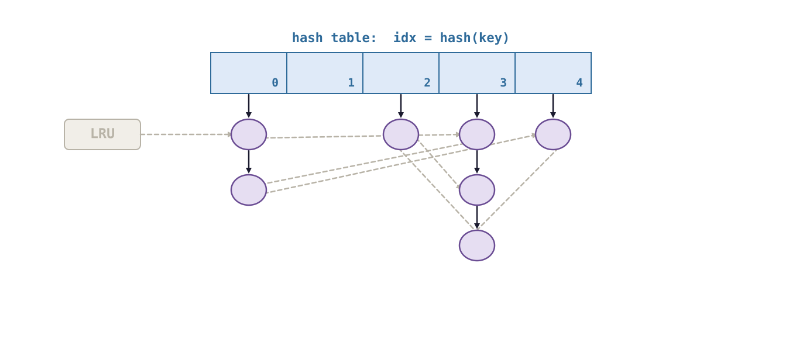</p> --- ### memcached | **lookup** 1. hash the key → <scb>idx = hash(key)</scb> --- ### memcached | **lookup** 1. hash the key → <scb>idx = hash(key)</scb> 2. walk the chain at <scb>idx</scb> --- ### memcached | **lookup** 1. hash the key → <scb>idx = hash(key)</scb> 2. walk the chain at <scb>idx</scb> 3. found → return the <scb>value</scb> --- ### memcached | **node** each node → one <scb>key</scb>/<scb>value</scb> pair <p>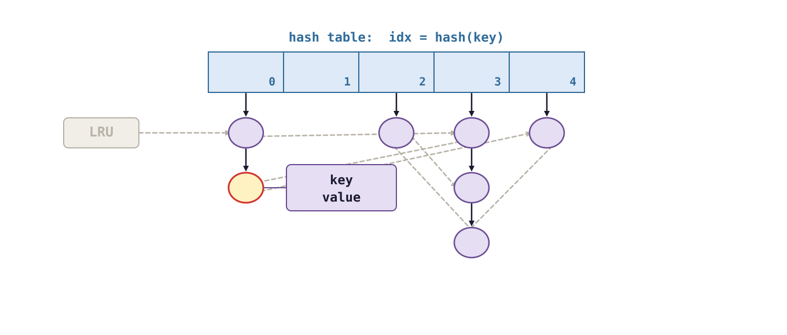</p> --- ### memcached | **hot keys** - some keys are **far** more popular --- ### memcached | **hot keys** - some keys are **far** more popular - something goes **viral** → one bucket gets hammered --- ### memcached | **LRU list** **replacement** (eviction) list <p>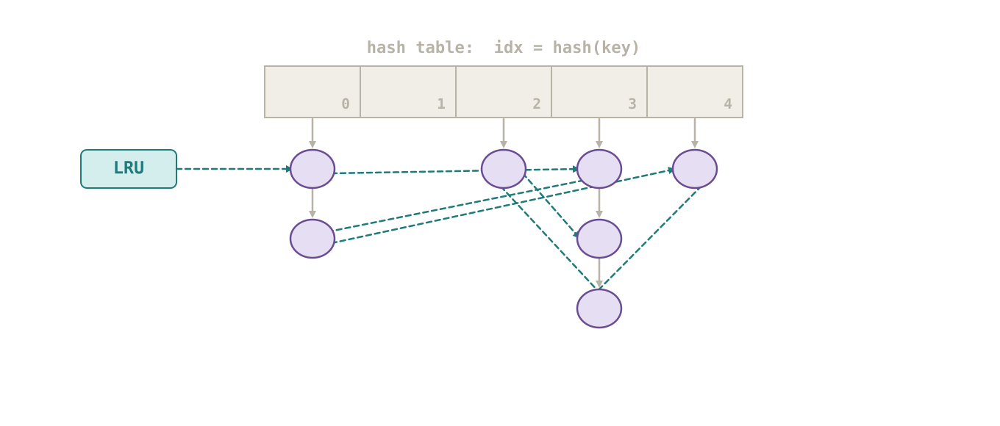</p> --- ### memcached | **LRU list** - memory is **finite** --- ### memcached | **LRU list** - memory is **finite** - cache full → must **evict** something --- ### memcached | **LRU list** - memory is **finite** - cache full → must **evict** something - evict the **least recently used** item --- ### memcached | **architecture** every node is on **both** lists! --- ### memcached | **architecture** every node is on **both** lists! <div class="multicolumn" style="display: grid; grid-template-columns: 40% 60%; gap: 20px; align-items: center;"> <div> </div> <div> - lookup → hash table - **and** move node to front of LRU list - → even a "read" **writes** the LRU list! </div> </div> --- ## where should we place the **locks**? --- ### where should we place the locks? 80 cores, all doing lookups... <br> <br> what are the **trade-offs** for each approach? --- ### locks | **option 1** **one lock** to rule them all! <p>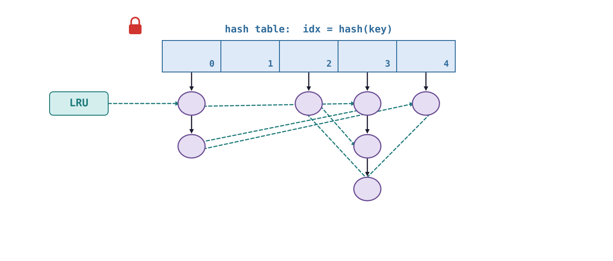</p> --- ### locks | **option 1** | good | bad | |---|---| | **simple**, obviously correct | **every** operation serialized | --- ### locks | **option 1** | good | bad | |---|---| | **simple**, obviously correct | **every** operation serialized | | | 80 cores → ~ **1** core of throughput | || --- ### locks | **option 2** one lock per **logical** data structure <p>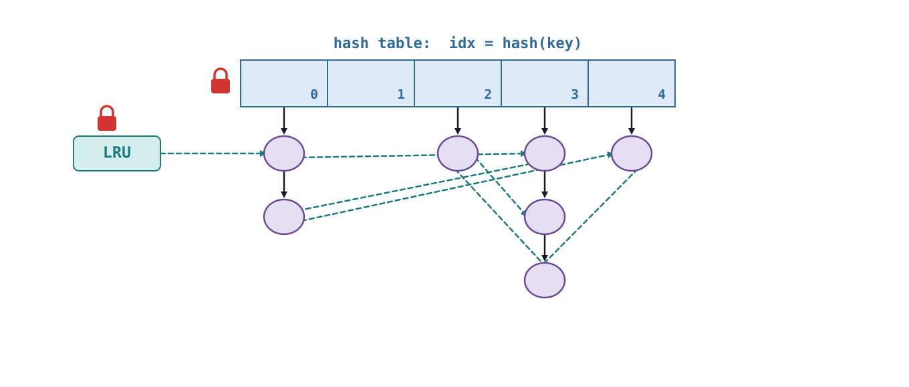</p> --- ### locks | **option 2** | good | bad | |---|---| | lookups and evictions **in parallel** | a node is on **both** lists | --- ### locks | **option 2** | good | bad | |---|---| | lookups and evictions **in parallel** | a node is on **both** lists | | | lookup on one core, **eviction** of same node on another? | --- ### locks | **option 2** | good | bad | |---|---| | lookups and evictions **in parallel** | a node is on **both** lists | | | lookup on one core, **eviction** of same node on another? | | | LRU lock taken on **every** hit | || --- ### locks | **option 3** **concurrent hash table** (lock per bucket) + LRU lock <p>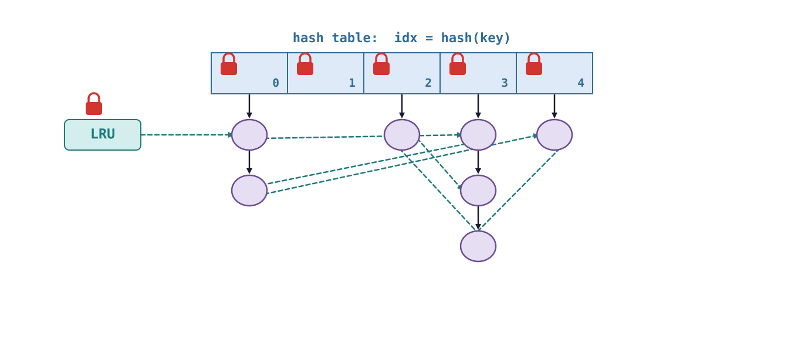</p> --- ### locks | **option 3** **concurrent hash table** (lock per bucket) + LRU lock <div class="multicolumn" style="display: grid; grid-template-columns: 40% 60%; gap: 20px; align-items: center;"> <div> <p>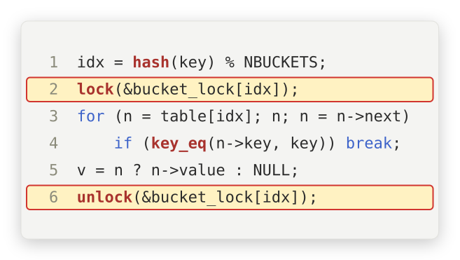</p> </div> <div> ||| | --- | --- | | lock | **only** our bucket | | other buckets | **in parallel**! | || </div> </div> --- ### locks | **option 3** | good | bad | |---|---| | lookups in **different** buckets → parallel | **hot** bucket → still serialized | --- ### locks | **option 3** | good | bad | |---|---| | lookups in **different** buckets → parallel | **hot** bucket → still serialized | | | LRU lock → still **global** | || --- ### locks | **option 4** **per-node** locks <p>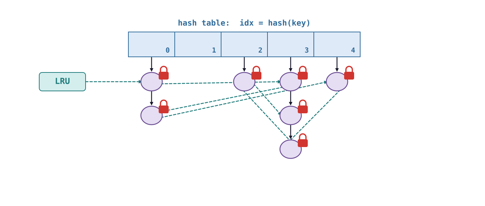</p> --- ### locks | **option 4** | good | bad | |---|---| | **most** parallelism | **many** locks → more overhead | --- ### locks | **option 4** | good | bad | |---|---| | **most** parallelism | **many** locks → more overhead | | | **hard** to reason about | || --- ## aside | **races with per-node locks** --- ### evicting a node think of the races with **this**... --- ### evicting a node when can you **free** the node? --- ### evicting a node when can you **free** the node? <br> <br> - only when **no one** else can reach it - → unlink it from **both** lists first --- ### evicting a node what **other** locks must you take? --- ### evicting a node - our node's lock --- ### evicting a node - our node's lock - **neighbours** on hash chain (their <scb>next</scb> pointers) --- ### evicting a node - our node's lock - **neighbours** on hash chain (their <scb>next</scb> pointers) - **neighbours** on LRU list --- ### evicting a node if you need other locks... in what **order**? <p>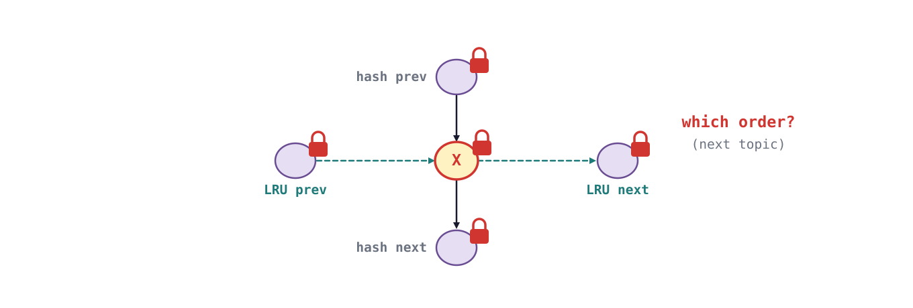</p> --- [wrong order → threads wait on each other **forever** → **next topic**: deadlock] --- ### locks | **option 5** concurrent **read/write** hash table + LRU lock <p>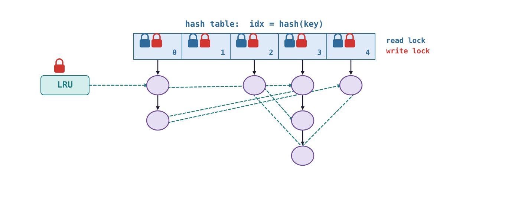</p> --- ### locks | **option 5** | good | bad | |---|---| | lookups take only the **read** lock | but each hit **writes** the LRU list! | --- ### locks | **option 5** | good | bad | |---|---| | lookups take only the **read** lock | but each hit **writes** the LRU list! | | many readers on a **hot** bucket | read/write locks → more **expensive** | || --- ### where should we place the locks? which one does memcached **really** use? <br> <br> [discussion → **in class**!] Note: - memcached (1.4+/1.5+) uses a striped table of item locks over the hash buckets, plus separate LRU locks (per slab class). --- ## dining philosophers --- ### dining philosophers a **famous** (contrived) synchronization problem <br> [see [dining philosophers (wikipedia)](https://en.wikipedia.org/wiki/Dining_philosophers_problem) → Dijkstra, 1965] --- ### dining philosophers **five** philosophers, **one** bowl of rice... **five** chopsticks <p>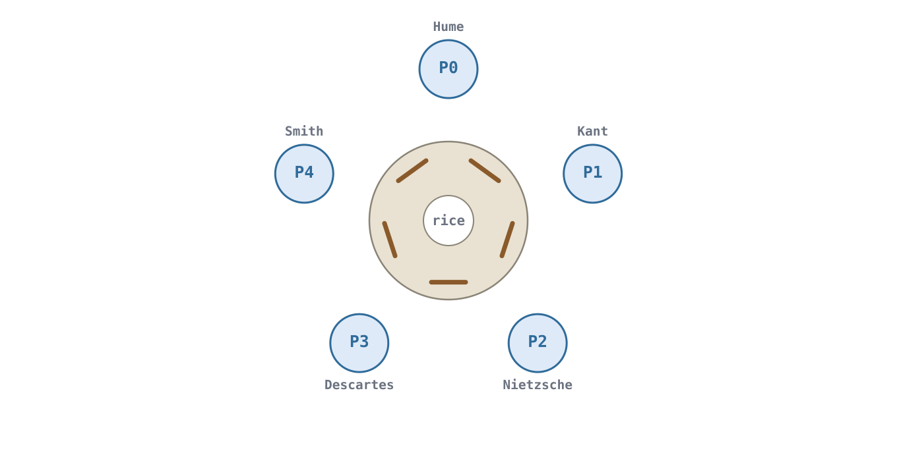</p> --- ### dining philosophers - philosophers **think**... and **eat** --- ### dining philosophers - philosophers **think**... and **eat** - eating rice needs **two** chopsticks --- ### dining philosophers - philosophers **think**... and **eat** - eating rice needs **two** chopsticks - only **five** chopsticks → they must **coordinate** --- ### dining philosophers | **states** each philosopher → one of **three** states <p>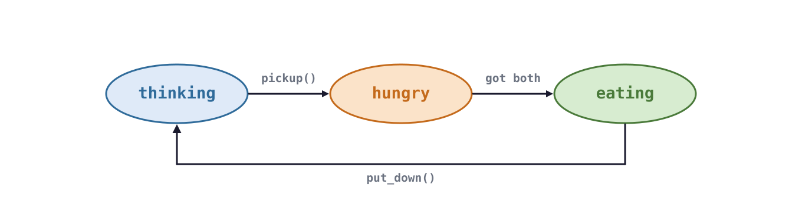</p> --- ### dining philosophers | **states** | state | what happens | |---|---| | <scb>thinking</scb> | deep thoughts | --- ### dining philosophers | **states** | state | what happens | |---|---| | <scb>thinking</scb> | deep thoughts | | <scb>hungry</scb> | tries to get chopsticks, **one at a time** | --- ### dining philosophers | **states** | state | what happens | |---|---| | <scb>thinking</scb> | deep thoughts | | <scb>hungry</scb> | tries to get chopsticks, **one at a time** | | <scb>eating</scb> | only if **both** chopsticks are free | || done eating → put **both** chopsticks down → <scb>thinking</scb> --- ## dining philosophers | **solution I** --- ### solution I | **a mutex per chopstick** ```C mutex chopstick[5]; int right(int i) { return (i+1)%5; } int left(int i) { return (i+4)%5; } while (1) { wait(chopstick[i]); wait(chopstick[right(i)]); eat_and_be_jolly(); signal(chopstick[i]); signal(chopstick[right(i)]); think_deep_thoughts(); } ``` --- ### solution I | **a mutex per chopstick** ```C [1|6|7|8|9-10|11] mutex chopstick[5]; int right(int i) { return (i+1)%5; } int left(int i) { return (i+4)%5; } while (1) { wait(chopstick[i]); wait(chopstick[right(i)]); eat_and_be_jolly(); signal(chopstick[i]); signal(chopstick[right(i)]); think_deep_thoughts(); } ``` --- ### solution I | **a mutex per chopstick** ```C mutex chopstick[5]; int right(int i) { return (i+1)%5; } int left(int i) { return (i+4)%5; } while (1) { wait(chopstick[i]); wait(chopstick[right(i)]); eat_and_be_jolly(); signal(chopstick[i]); signal(chopstick[right(i)]); think_deep_thoughts(); } ``` --- what could go **wrong**? --- ### solution I | **problem** what if everyone gets hungry at the **same time**? <div class="multicolumn" style="display: grid; grid-template-columns: 40% 60%; gap: 20px; align-items: center;"> <div> <p>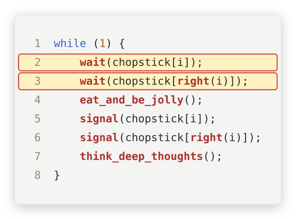</p> </div> <div> ||| | --- | --- | | step 1 | **all** take <scb>chopstick[i]</scb> | | step 2 | **all** wait for <scb>chopstick[right(i)]</scb> | || </div> </div> --- ### solution I | **problem** 1. everyone takes <scb>chopstick[i]</scb> <p>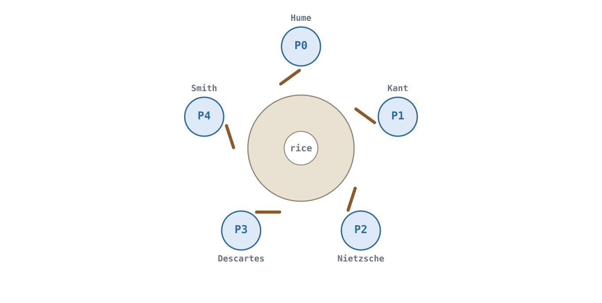</p> --- ### solution I | **problem** 2. everyone reaches for <scb>chopstick[right(i)]</scb>... held by the neighbour! <p>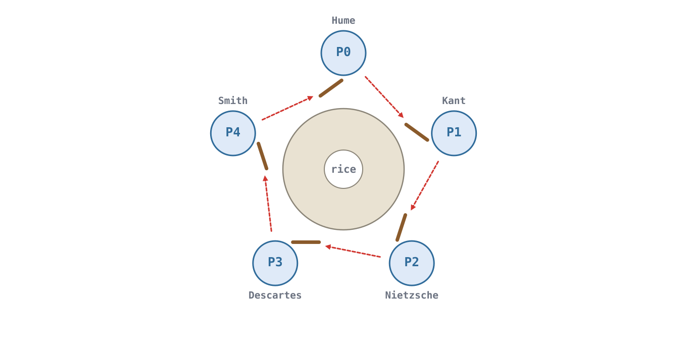</p> --- ### solution I | **problem** 3. nobody can **ever** proceed <p>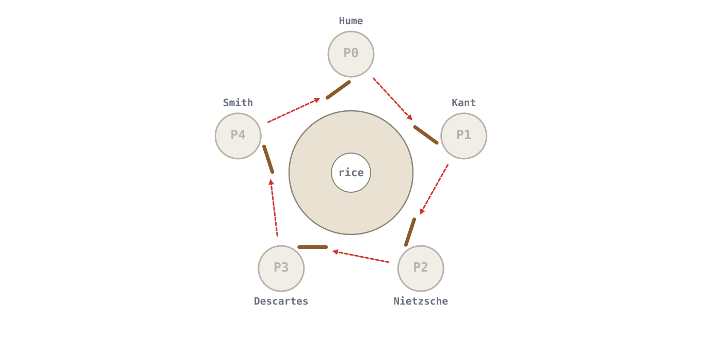</p> --- ## **deadlock!** <br> everyone **holds** one resource and **waits** for another → a **cycle** --- let's look at a `code` example using <scb>pthreads</scb> (Linux) --- ```C #include <pthread.h> #include <stdio.h> #include <unistd.h> #define N 5 pthread_mutex_t chopstick[N]; int meals[N]; int right(int i) { return (i + 1) % N; } void *philosopher(void *arg) { int i = *(int *)arg; while (1) { pthread_mutex_lock(&chopstick[i]); // take left chopstick usleep(1000); // think a moment... (widens the race) pthread_mutex_lock(&chopstick[right(i)]); // take right chopstick meals[i]++; // eat_and_be_jolly() pthread_mutex_unlock(&chopstick[i]); pthread_mutex_unlock(&chopstick[right(i)]); } } int main(void) { pthread_t t[N]; int id[N]; for (int i = 0; i < N; i++) pthread_mutex_init(&chopstick[i], NULL); for (int i = 0; i < N; i++) { id[i] = i; pthread_create(&t[i], NULL, philosopher, &id[i]); } for (int s = 1; s <= 3; s++) { sleep(1); printf("after %ds: meals = %d %d %d %d %d\n", s, meals[0], meals[1], meals[2], meals[3], meals[4]); fflush(stdout); } return 0; } ``` --- ```C [6|14|15|16|17|28-31] #include <pthread.h> #include <stdio.h> #include <unistd.h> #define N 5 pthread_mutex_t chopstick[N]; int meals[N]; int right(int i) { return (i + 1) % N; } void *philosopher(void *arg) { int i = *(int *)arg; while (1) { pthread_mutex_lock(&chopstick[i]); // take left chopstick usleep(1000); // think a moment... (widens the race) pthread_mutex_lock(&chopstick[right(i)]); // take right chopstick meals[i]++; // eat_and_be_jolly() pthread_mutex_unlock(&chopstick[i]); pthread_mutex_unlock(&chopstick[right(i)]); } } int main(void) { pthread_t t[N]; int id[N]; for (int i = 0; i < N; i++) pthread_mutex_init(&chopstick[i], NULL); for (int i = 0; i < N; i++) { id[i] = i; pthread_create(&t[i], NULL, philosopher, &id[i]); } for (int s = 1; s <= 3; s++) { sleep(1); printf("after %ds: meals = %d %d %d %d %d\n", s, meals[0], meals[1], meals[2], meals[3], meals[4]); fflush(stdout); } return 0; } ``` --- ```C #include <pthread.h> #include <stdio.h> #include <unistd.h> #define N 5 pthread_mutex_t chopstick[N]; int meals[N]; int right(int i) { return (i + 1) % N; } void *philosopher(void *arg) { int i = *(int *)arg; while (1) { pthread_mutex_lock(&chopstick[i]); // take left chopstick usleep(1000); // think a moment... (widens the race) pthread_mutex_lock(&chopstick[right(i)]); // take right chopstick meals[i]++; // eat_and_be_jolly() pthread_mutex_unlock(&chopstick[i]); pthread_mutex_unlock(&chopstick[right(i)]); } } int main(void) { pthread_t t[N]; int id[N]; for (int i = 0; i < N; i++) pthread_mutex_init(&chopstick[i], NULL); for (int i = 0; i < N; i++) { id[i] = i; pthread_create(&t[i], NULL, philosopher, &id[i]); } for (int s = 1; s <= 3; s++) { sleep(1); printf("after %ds: meals = %d %d %d %d %d\n", s, meals[0], meals[1], meals[2], meals[3], meals[4]); fflush(stdout); } return 0; } ``` --- five philosophers, three seconds... how many **meals**? --- ### solution I | **output** ``` $ gcc -pthread -o dining_naive dining_naive.c $ ./dining_naive after 1s: meals = 0 0 0 0 0 after 2s: meals = 0 0 0 0 0 after 3s: meals = 0 0 0 0 0 ``` **nobody** ever eats → deadlocked! Note: - actual run on a Linux box; usleep(1000) between the two locks just makes the deadlock happen right away. --- ## dining philosophers | **solution II** --- ### solution II | **abstract it** ```C [2|4] while (1) { pickup(i); eat_and_be_jolly(); put_down(i); think_deep_thoughts(); } ``` --- ### solution II | **abstract it** hide the chopstick logic in <scb>pickup()</scb>/<scb>put_down()</scb> <br> <br> ...and make them functions of a **monitor**! --- ## dining philosophers | **solution III** --- ### solution III | **monitor** ```C monitor DP { enum {THINKING, HUNGRY, EATING} state[5]; cond_t eat_time[5]; // condition -> time to eat void pickup(int i) { state[i] = HUNGRY; time_to_eat(i); if (state[i] != EATING) wait(eat_time[i]); } void put_down(int i) { state[i] = THINKING; time_to_eat(right(i)); time_to_eat(left(i)); } void time_to_eat(int i) { if ((state[right(i)] != EATING) && (state[i] == HUNGRY) && (state[left(i)] != EATING)) { state[i] = EATING; signal(eat_time[i]); } } } ``` --- ### solution III | **monitor** ```C [2|3|6|7|8-9|13|14-15|19-21|22-23] monitor DP { enum {THINKING, HUNGRY, EATING} state[5]; cond_t eat_time[5]; // condition -> time to eat void pickup(int i) { state[i] = HUNGRY; time_to_eat(i); if (state[i] != EATING) wait(eat_time[i]); } void put_down(int i) { state[i] = THINKING; time_to_eat(right(i)); time_to_eat(left(i)); } void time_to_eat(int i) { if ((state[right(i)] != EATING) && (state[i] == HUNGRY) && (state[left(i)] != EATING)) { state[i] = EATING; signal(eat_time[i]); } } } ``` --- ### solution III | **monitor** ```C monitor DP { enum {THINKING, HUNGRY, EATING} state[5]; cond_t eat_time[5]; // condition -> time to eat void pickup(int i) { state[i] = HUNGRY; time_to_eat(i); if (state[i] != EATING) wait(eat_time[i]); } void put_down(int i) { state[i] = THINKING; time_to_eat(right(i)); time_to_eat(left(i)); } void time_to_eat(int i) { if ((state[right(i)] != EATING) && (state[i] == HUNGRY) && (state[left(i)] != EATING)) { state[i] = EATING; signal(eat_time[i]); } } } ``` --- ### solution III | **monitor** remember → monitor **mutex** held while executing **all** its fns! <br> [original slides call it <scb>time_to_eat?()</scb> → not a valid C name] --- ### solution III | **monitor** 1. <scb>P0</scb> eating → <scb>P1</scb>, <scb>P4</scb> hungry → <scb>wait()</scb> on their CVs <p>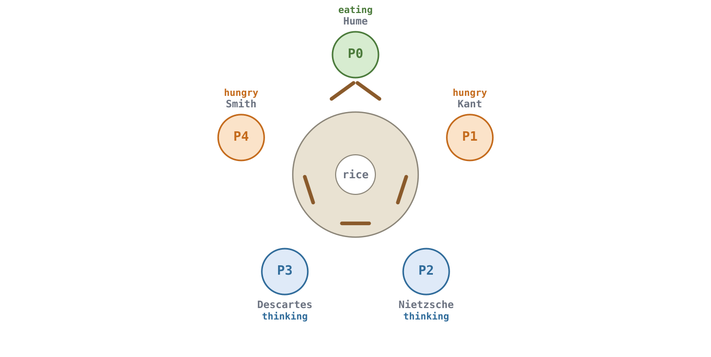</p> --- ### solution III | **monitor** 2. <scb>P2</scb> gets hungry → both neighbours not eating → eats <p>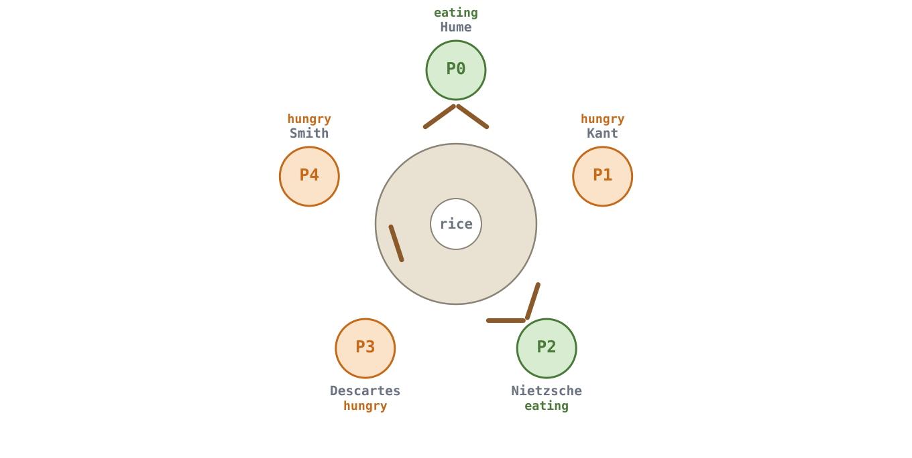</p> --- ### solution III | **monitor** 3. <scb>P0</scb> <scb>put_down()</scb> → <scb>time_to_eat(P4)</scb> → <scb>signal</scb> → <scb>P4</scb> eats <p>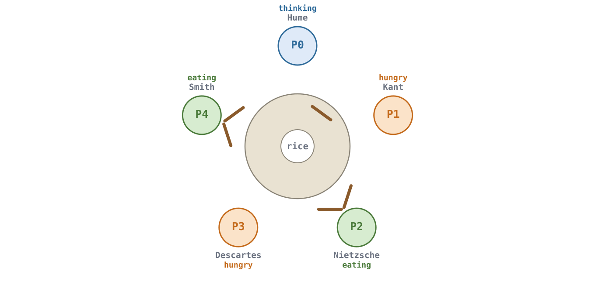</p> --- ### solution III | **legend** ||| | --- | --- | | [**<font color="blue">blue</font>**] | <scb>thinking</scb> | --- ### solution III | **legend** ||| | --- | --- | | [**<font color="blue">blue</font>**] | <scb>thinking</scb> | | [**<font color="orange">orange</font>**] | <scb>hungry</scb> | --- ### solution III | **legend** ||| | --- | --- | | [**<font color="blue">blue</font>**] | <scb>thinking</scb> | | [**<font color="orange">orange</font>**] | <scb>hungry</scb> | | [**<font color="green">green</font>**] | <scb>eating</scb> | || --- why can't this deadlock? --- ### solution III | **why no deadlock?** why can't this deadlock? --- ### solution III | **why no deadlock?** why can't this deadlock? <br> <br> - a philosopher takes **both** chopsticks **or none** - decided **atomically** inside the monitor --- let's look at a `code` example using <scb>pthreads</scb> (Linux) --- ```C void try_to_eat(int i) { // called with dp held if (state[i] == HUNGRY && state[left(i)] != EATING && state[right(i)] != EATING) { state[i] = EATING; pthread_cond_signal(&eat_time[i]); } } void pickup(int i) { pthread_mutex_lock(&dp); state[i] = HUNGRY; try_to_eat(i); while (state[i] != EATING) // while, not if: re-check after waking pthread_cond_wait(&eat_time[i], &dp); pthread_mutex_unlock(&dp); } void put_down(int i) { pthread_mutex_lock(&dp); state[i] = THINKING; try_to_eat(left(i)); // neighbours may eat now try_to_eat(right(i)); pthread_mutex_unlock(&dp); } ``` --- ```C [2|4|10|12|13|19|20-21] void try_to_eat(int i) { // called with dp held if (state[i] == HUNGRY && state[left(i)] != EATING && state[right(i)] != EATING) { state[i] = EATING; pthread_cond_signal(&eat_time[i]); } } void pickup(int i) { pthread_mutex_lock(&dp); state[i] = HUNGRY; try_to_eat(i); while (state[i] != EATING) // while, not if: re-check after waking pthread_cond_wait(&eat_time[i], &dp); pthread_mutex_unlock(&dp); } void put_down(int i) { pthread_mutex_lock(&dp); state[i] = THINKING; try_to_eat(left(i)); // neighbours may eat now try_to_eat(right(i)); pthread_mutex_unlock(&dp); } ``` --- ```C void try_to_eat(int i) { // called with dp held if (state[i] == HUNGRY && state[left(i)] != EATING && state[right(i)] != EATING) { state[i] = EATING; pthread_cond_signal(&eat_time[i]); } } void pickup(int i) { pthread_mutex_lock(&dp); state[i] = HUNGRY; try_to_eat(i); while (state[i] != EATING) // while, not if: re-check after waking pthread_cond_wait(&eat_time[i], &dp); pthread_mutex_unlock(&dp); } void put_down(int i) { pthread_mutex_lock(&dp); state[i] = THINKING; try_to_eat(left(i)); // neighbours may eat now try_to_eat(right(i)); pthread_mutex_unlock(&dp); } ``` --- same five philosophers, three seconds... how many **meals** now? --- ### solution III | **output** ``` $ gcc -pthread -o dining_monitor dining_monitor.c $ ./dining_monitor after 1s: meals = 327 321 334 333 329 after 2s: meals = 653 650 654 660 659 after 3s: meals = 982 980 988 998 992 ``` **everyone** eats → no deadlock! Note: - actual run on a Linux box. --- ### solution III | **details** | detail | why | |---|---| | <scb>while</scb>, not <scb>if</scb> | <scb>pthread_cond_wait</scb> may wake **spuriously** <br> → re-check | --- ### solution III | **details** | detail | why | |---|---| | <scb>while</scb>, not <scb>if</scb> | <scb>pthread_cond_wait</scb> may wake **spuriously** <br> → re-check | | <scb>signal</scb> on yourself | nobody waiting yet → signal **lost**, harmless | --- ### solution III | **details** | detail | why | |---|---| | <scb>while</scb>, not <scb>if</scb> | <scb>pthread_cond_wait</scb> may wake **spuriously** <br> → re-check | | <scb>signal</scb> on yourself | nobody waiting yet → signal **lost**, harmless | | **starvation**? | possible! neighbours can keep **alternating** | || Note: - the classic monitor solution avoids deadlock but not starvation: P1 can starve if P0 and P2 alternate eating. --- ## synchronization | **summary** --- - synchronization is **hard**... --- - synchronization is **hard**... - ...but **necessary** to use all those cores! --- ||| | --- | --- | | 1. **state goals** | do you **need** parallelism? <br> no → keep it **simple** | --- ||| | --- | --- | | 1. **state goals** | do you **need** parallelism? <br> no → keep it **simple** | | 2. **assess trade-offs** | coarse, fine-grained, read/write locks... | --- ||| | --- | --- | | 1. **state goals** | do you **need** parallelism? <br> no → keep it **simple** | | 2. **assess trade-offs** | coarse, fine-grained, read/write locks... | | 3. **iron out design** | then implement | || --- **next topic** → synchronization gone wrong → **deadlock**